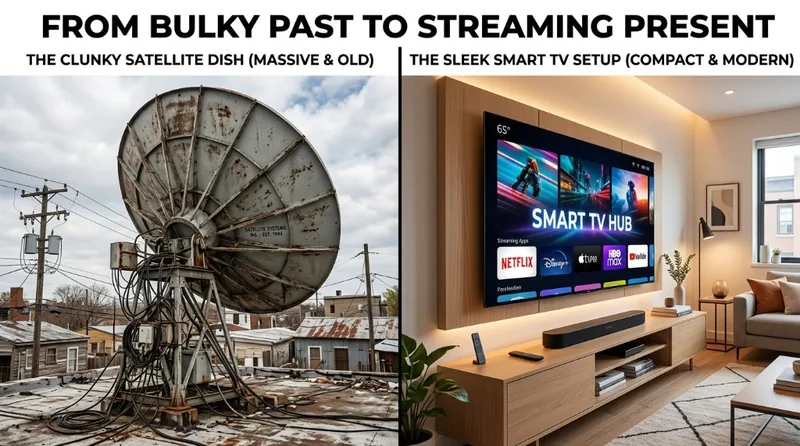
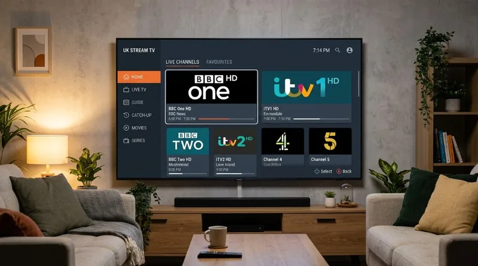

Knowing how to get UK TV in Spain on Smart TV without satellite is the single most liberating upgrade British expats and retirees can make to their Spanish home. For decades, watching BBC, ITV, and Channel 4 meant installing unsightly, expensive satellite dishes that constantly suffered from signal dropouts during rain or wind. Today, high-speed Spanish fibre broadband makes it effortless to stream your favorite British television directly on your living room Smart TV—with zero dishes, zero complicated network configurations, and complete reliability.
Whether you have recently moved to a coastal villa in the Costa del Sol, purchased an apartment in Alicante, or lived on the Costa Blanca for years, you no longer have to sacrifice the comfort of morning news, evening soaps, or Saturday afternoon football. By switching to a modern internet-based IPTV subscription Europe service, you can bring every British channel right into your living room with nothing more than an internet connection and your television remote.
The Problem with Satellite Dishes in Spain
If you have ever tried to maintain a satellite dish in southern Spain, you are undoubtedly familiar with the headache. The root cause of this persistent frustration lies in satellite orbital physics: the Astra 28.2E spotbeam.

The Astra 2E, 2F, and 2G satellites that broadcast British free-to-air channels (including BBC, ITV, Channel 4, and Channel 5) focus their primary signal beam directly on the United Kingdom and Ireland. As you travel south toward Spain, signal intensity falls off dramatically. In northern Spain, reception is reasonable on standard dishes. However, once you reach southern regions like Malaga, Marbella, Torrevieja, and Almeria, you are situated at the absolute extreme fringe of the broadcast footprint.
To capture this faint signal, expats were historically forced to hire specialized contractors to erect massive 1.4-metre to 1.8-metre aluminium dishes on their rooftops or terraces. Not only are these enormous dishes an eyesore that many Spanish community associations (Comunidad de Propietarios) actively prohibit, but they are also exceptionally fragile. Salty Mediterranean air corrodes the dish mounts, heavy winds easily knock the delicate Low-Noise Block (LNB) out of alignment, and a light cloud cover or rain shower causes immediate "weather fade"—cutting off sound and pixelating the picture right in the middle of your favorite drama or live match.
In 2026, as satellites age and beam boundaries remain strictly constrained, spending hundreds of euros to install or re-align a gigantic dish is simply poor value. Modern Spanish households have overwhelmingly moved to internet-delivered television.
Can I Just Use a VPN on My Smart TV?
When searching for ways to watch British TV abroad, the most common suggestion found online is: "Just install a VPN and use BBC iPlayer." While this advice sounds simple in theory, it quickly turns into a technical nightmare for homeowners and retirees trying to enjoy casual viewing on their main living room set.
Here is why relying on a VPN for Smart TV viewing consistently falls short:
- No Native App Store Support: The vast majority of Smart TVs in Spain run on proprietary operating systems—specifically Samsung TVs running Tizen OS and LG TVs running webOS. Neither Samsung nor LG permits consumer VPN applications in their official app stores. You cannot simply download a VPN app directly onto the TV like you would on a laptop or smartphone.
- The VPN Router Complication: To route Smart TV traffic through a UK server, technical guides suggest installing a "VPN router." This requires purchasing specialized hardware, flashing complex custom firmware (like DD-WRT), and configuring server routing tables. For everyday television viewers who want to press one button on their remote control and watch the news, this is intimidating, expensive, and unnecessary.
- Constant Broadcaster Blocks: UK streaming platforms like BBC iPlayer, ITVX, and Channel 4 have invested millions into sophisticated VPN detection firewalls. Free and cheap commercial VPN IP ranges are continuously identified and blacklisted. Even if your connection works on a Tuesday, you will frequently find yourself locked out on a Thursday with the frustrating error: "BBC iPlayer only works in the UK."
- Slow Speeds & Reduced Bandwidth: Routing your entire home internet connection through an encrypted tunnel hundreds of miles away severely restricts speeds. This causes continuous buffering wheels whenever multiple family members use phones or tablets simultaneously.
Why Not Just Cast from an iPad or Laptop?
Many expats attempt to open iPlayer on a tablet with a VPN and "AirPlay" or "Cast" the video to their television screen. However, UK catch-up apps routinely disable HDMI mirroring and screen casting when active VPN connections are detected, leading to blank black screens on your television.
The Easiest Solution: Premium IPTV for Expats
If satellite dishes are obsolete and VPNs are excessively complicated, what is the best way to watch BBC and ITV in Spain without dish? The answer is an internet-based European television service designed specifically for overseas viewers: IPTV Mate EU.

Rather than wrestling with dish alignments or software firewalls, IPTV streams broadcast feeds securely through your regular Spanish broadband connection. You download a lightweight, certified media player directly from your TV's built-in App Store, enter your activation credentials, and instantly unlock thousands of high-definition channels.
Here is why thousands of British residents across the Costa del Sol, Costa Blanca, and Balearic Islands have embraced this as the best internet TV for expats in Spain:
- True Remote Control Simplicity: You don't have to switch inputs, boot up laptops, or connect cables. Turn on your Smart TV, click the TV app tile, and browse channels using your standard television remote. It feels identical to having a British set-top box plugged directly into your wall.
- Proprietary Anti-Freeze™ 9.0 Infrastructure: Budget reseller streams often freeze during peak evening hours or major sporting events. IPTV Mate runs on high-capacity European Content Delivery Networks (CDNs) with edge servers located in Madrid, Frankfurt, and Paris. This delivers smooth, instantaneous stream loading with zero buffering.
- Every Major UK Channel Included: Enjoy full access to our UK TV channels list, featuring BBC One, BBC Two, ITV1, ITV2, Channel 4, Channel 5, Film4, Sky Cinema, Sky Atlantic, and complete live sports coverage on Sky Sports and TNT Sports.
- 7-Day Catch-Up TV: Because life in Spain involves sunny afternoons and late dinners, you might not always be home when your favorite programme airs. With built-in 7-day catch-up, you can rewind and replay missed episodes of Coronation Street, Emmerdale, or the evening news at your leisure.
What You Need to Get Started
Setting up your Smart TV takes less than five minutes. You do not need any technical experience or professional installers. Here are the three simple ingredients:
1. A Reliable Spanish Internet Connection
Spain boasts one of the most advanced fibre optic (fibra) telecommunication infrastructures in all of Europe. Major domestic providers such as Movistar, Orange, Vodafone, Yoigo, and Digi routinely offer packages ranging from 100 Mbps up to 1 Gbps. To stream live television in crisp Full HD or 4K, you only need a steady download speed of 15 to 25 Mbps. Connecting your television to your home router with a simple Ethernet cable provides optimal stability, though modern 5 GHz Wi-Fi also performs admirably.
2. A Compatible Smart TV or Inexpensive Streaming Stick
Most modern Smart TVs manufactured within the last 6 to 8 years support dedicated player apps natively:
- Samsung Smart TVs (Tizen OS): Download popular players such as IBO Player or Smart IPTV directly from the Samsung Apps store.
- LG Smart TVs (webOS): Install IBO Player or IPTV Smarters Pro from the LG Content Store.
- Sony, Philips & TCL (Android TV / Google TV): Download TiviMate, the undisputed premier interface for live television navigation.
- Non-Smart TVs or Older Sets: If your TV is older or you prefer a lightning-fast experience, plug an inexpensive Amazon Fire TV Stick 4K (approx. €45 on Amazon Spain) into any HDMI port.
3. An IPTV Mate EU Subscription
Once your chosen player app is installed, you simply connect it to our high-speed European servers. Explore our flexible IPTV subscription plans—starting from as little as €6.25 per month for annual plans—and receive your instant activation details directly via WhatsApp or email. If you want to test your home connection first, you can easily request a 24-hour free trial to experience the picture quality firsthand before making any commitments.
Method Comparison: Satellite vs. VPN Router vs. Premium IPTV
To see how these options compare for real-world Spanish households, review the comparison table below:
| Method | Setup Difficulty | Reliability in Spain | Hardware Required | Typical Cost |
|---|---|---|---|---|
| Satellite Dish (Astra 28.2°E) | Hard Professional roof installer required |
Poor in South Spain Frequent weather fade & signal loss |
Yes (1.4m–1.8m dish, LNB, receiver box) | €400 – €800 upfront installation |
| VPN Router Setup | Very Complex Requires networking skills & firmware |
Unpredictable UK broadcasters actively ban VPN IP pools |
Yes (Specialized dual-router setup) | €100+ router + €8–€12 monthly VPN fee |
| Premium IPTV (IPTV Mate EU) | Very Easy Plug & play in under 5 minutes |
Excellent Anti-Freeze 9.0 with local European CDNs |
No (Runs natively on your Smart TV) | From €6.25 / month (no contracts) |
Frequently Asked Questions
Do I need a satellite dish for UK TV in Spain?
No, you do not need an outdoor satellite dish to watch British TV in Spain. Modern broadband internet connections and Smart TV streaming applications allow you to stream all UK free-to-air and premium channels in full high definition without any outdoor dish or receiver box.
Can I watch BBC iPlayer in Spain without a VPN?
Yes. While native UK catch-up apps like BBC iPlayer and ITVX block Spanish internet addresses, a dedicated European IPTV service like IPTV Mate delivers live BBC One, BBC Two, and 7-day catch-up directly to your Smart TV through European CDN servers without requiring you to install, configure, or pay for a separate VPN. If you're curious about internet privacy and throttling, read our comprehensive analysis on whether you need a VPN for IPTV streaming.
What is the best app to watch UK TV on a Smart TV?
For Samsung and LG Smart TVs, popular and user-friendly apps include IBO Player, IPTV Smarters Pro, and Smart IPTV. If you use an Amazon Firestick connected to your TV, TiviMate and IPTV Smarters are widely considered the gold standard for crisp electronic program guides (EPG) and seamless channel switching.
Is my internet fast enough for UK TV in Spain?
Yes, provided you have a steady connection of at least 15 to 25 Mbps. Most Spanish homes in Costa del Sol, Costa Blanca, and major coastal towns have access to high-speed fibre optic (fibra) offering 100 Mbps to 600 Mbps from providers like Movistar, Orange, Vodafone, and Digi, which is more than enough for crystal-clear 4K and FHD streaming.
Start Watching British TV in Your Spanish Home Today
Retiring or living in Spain should be about enjoying the Mediterranean sunshine, good food, and relaxed lifestyle—not worrying about satellite dishes blowing out of alignment or battling VPN connection errors on your television. Switching to an internet-based solution gives you complete peace of mind, crystal-clear 4K and Full HD broadcast quality, and the familiar British programmes that make your Spanish villa or apartment feel like home.
Ready to upgrade your home entertainment system? Explore our affordable IPTV subscription plans today, or contact our friendly 24/7 support team to get your Smart TV set up in minutes. Your favorite British television channels are just a click away.